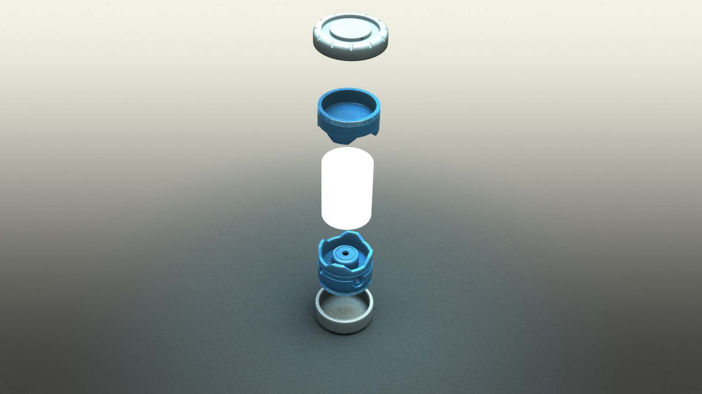
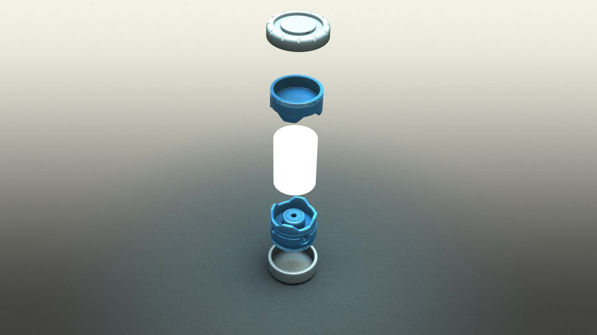

Industrial Designer


 

Buddy Light: There is a lot of light products in this world, however there's not many choices that matches our needs and reduce the harm to our world. Our team of designers aim to create an outdoor illumination product that improves on traditional market designs. We redesigned the product based on the consideration of sustainability,illumination efficiency, and materials to withstand outdoor abuse and harsh environment condition. We intended to increase the product life cycle by using polypropylene that will be able to withstand outdoor abuse. The Buddy Lite Saver delivers 400 lumens of light through a handheld energy crank system. We improved the design with the choice of materials that will be able to withstand outdoor abuse and increased the products life cycle.